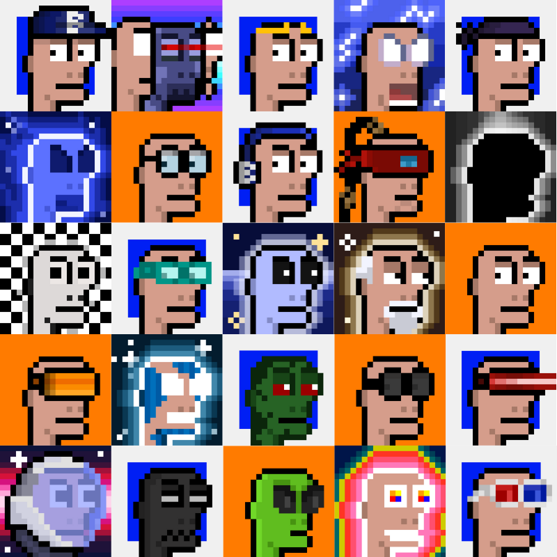
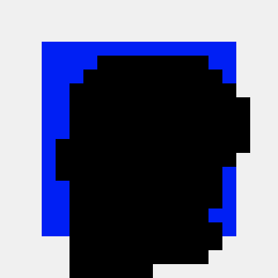
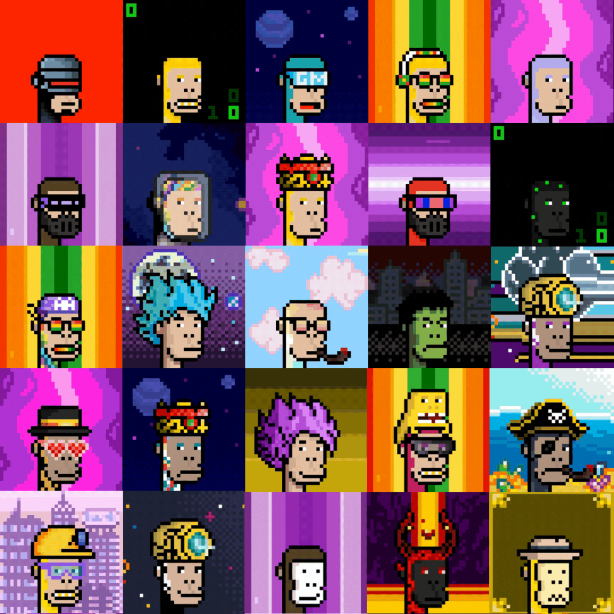
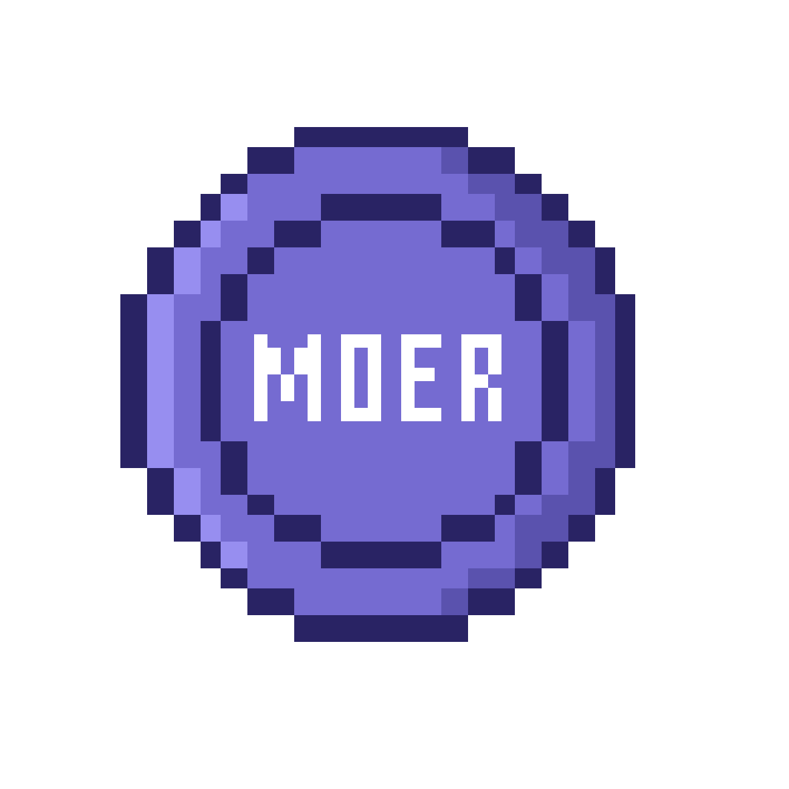
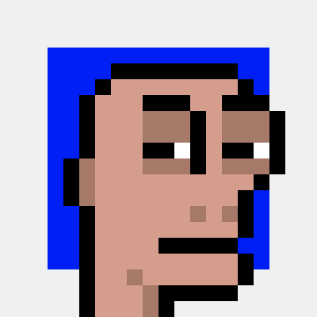

Bald Moe
GENESISA collection of hand-drawn Bald Moe identities, alternate realities, dream states, experiments and characters. The artwork is the visual heart of the Moerverse.
EXPLORE ART ↗Based Moer is the home of the Moerverse: original pixel characters, collectibles, stories, education, games and Moe AI. One evolving universe where independent art and onchain technology meet.

Moerverse is the creative world surrounding Based Moer and Moe AI. Characters can exist in different timelines, identities, universes and strange adventures. NFTs are part of the universe — not the entire universe.

A collection of hand-drawn Bald Moe identities, alternate realities, dream states, experiments and characters. The artwork is the visual heart of the Moerverse.
EXPLORE ART ↗
The animated evolution of Polygon Ape Punks. Travelers, punks and explorers crossing different worlds inside the Moerverse.
EXPLORE APE PUNKS ↗Moe AI begins as an explainable 4H market-structure scanner. It scans, evaluates, records and monitors structured setups. The long-term direction reaches beyond a normal signal bot: decision-making, learning, risk management and eventually agent-ready onchain interaction.
This panel talks to the existing Moe AI backend through the website's own Vercel API route. When live signals are available, they appear below.
Experimental market analysis only. Nothing displayed here is financial advice. DYOR.
Explore the artwork first. The embedded OnCyber gallery lets visitors move directly into the Based Moer collection experience without leaving the main website.
2,222 animated Ape Punks on Base. The mint remains paused while the wider product and access system continues developing.
VIEW COLLECTION ↗222 Genesis Bald Moe pieces plus Singular Fragment artwork. Genesis represents the deeper collector layer of the Moerverse.
Moe Academy teaches the ideas behind the scanner before asking users to interpret setups themselves. Read every chapter, take the exam, and pass the lesson to complete it.
The real Moer Coin Flip is being prepared as a future Base-native game. The temporary browser-only version has been removed.

A simple, pixel-first Coin Flip experience built around the Based Moer token artwork. The real version will be developed separately from this visual preview before being connected to the main website.
The main website is only the entrance. Explore the artwork, watch animations, read the documentation or join the community.

Based Moer started with pixel art. The Moerverse grows outward from there: characters, stories, collectibles, community, AI, tools and onchain experiments.